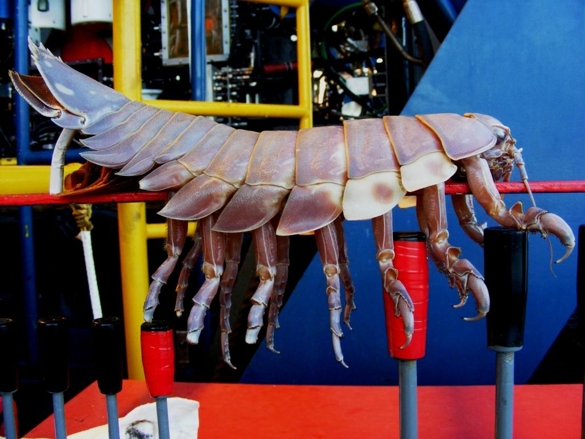

Guess What 14-legged Monster Just Got a Taste for Humans - Be Afraid
Apparently, the ocean is sick of being abused and it’s sending up armored hellbeasts to devour us.
See Isopocalypse 2010 for more. In all seriousness, the guy there is the closest thing you can get to an Isopod expert, and gives a great expose on how breathless reporting of strange creatures can go from divorced-from-reality to full-blown-crazy-talk in no time flat.
This entry was posted on Friday, April 2nd, 2010 at 7:15 PM and is filed under Eschatology. You can follow any responses to this entry through the RSS 2.0 feed. You can leave a response, or trackback from your own site.